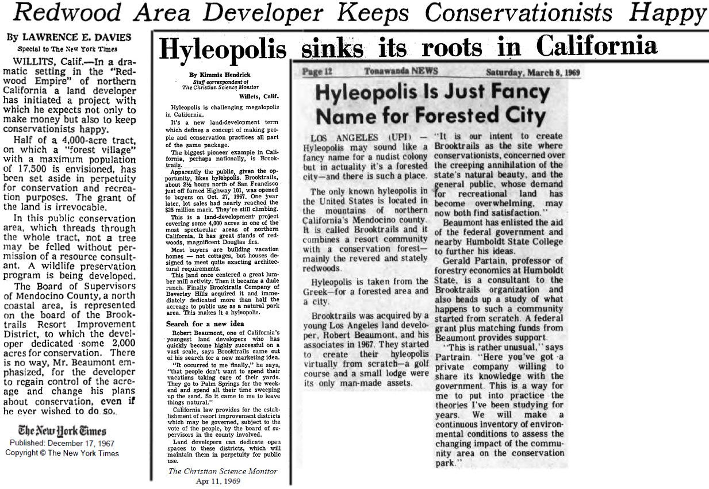

Choose your way outside
What sounds good today?
Pick an experience. The field card opens the maps, forms, rules, and next steps that belong together.
Trail file 02 · Explore
Take three steps toward the trailhead.
The hiker leads you to the two things that matter before setting out: the district trail map and current park conditions.
The district PDF is the authoritative printable map. Confirm closures, hazards, and changing conditions with the district before depending on them.
Field file 03 · Gather
Make the forest your gathering room.
Two retained applications help residents begin planning a community gathering. Availability, fees, and approval remain subject to district confirmation.
- Choose the setting. Compare the Community Center and Ohl Redwood Grove.
- Review the application. Check rules, capacity, and requested dates.
- Confirm with staff. Contact the district before making dependent plans.
Field file 04 · Steward
Leave the greenbelt better than you found it.
The Recreation, Greenbelt & Conservation Committee supports public participation, and Willits Area Cyclists partners with the district on organized trail stewardship.
- Spot a problem. Note the trail, nearest landmark, and condition.
- Send a useful report. Tell the District Desk which trail and landmark you observed.
- Join the conversation. Confirm the committee's next meeting with the district.
Field file 05 · Preserve
A park built from a conservation promise.
Approximately 2,500 acres were dedicated for conservation and recreation. Ordinance 63 formally established Brooktrails Redwood Park in 1988, followed by a master plan and later stewardship work.
- See the boundary. Open the park map and trail system.
- Read the rule. Ordinance 63 records the park's establishment.
- Follow the long view. The stewardship plan guides care for the greenbelt.
Field file 01 · Play
Send one down the fairway.
Watch the shot, then call the course for current tee times, operating details, and conditions.
Brooktrails Redwood Park
Conservation land woven through the community.
The park's approximately 2,500 acres carry a long-running promise: make room for recreation while protecting the forest landscape that defines Brooktrails.
The complete source history, maps, ordinance, master-plan record, and stewardship materials remain available for people who want to go deeper.
Discover how the promise began →